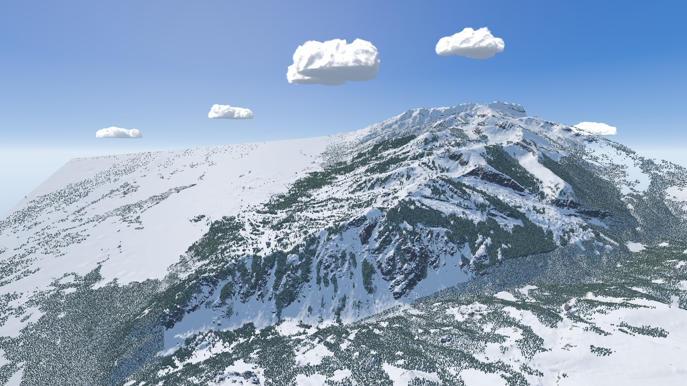

The layout from your sketch as a clickable mockup, in the Trailhead look over our Unity mountain. The status bar runs the full width of the bottom, docked to the edge or floating; the clock and weather run, the tools draw on the mountain, and building costs money. Nothing is saved when you reload.
Build a lift (Phase 3 tool): Toolbox → Lifts → New opens the lift menu: type, capacity, and towers Automatic or By hand. The whole terminal follows the pointer; click to anchor it, then click far away to place the other terminal, which fixes the line (drawn as a trail map draws a lift, a line with a dot at each end). Automatic puts the towers in as you aim. By hand, the tower in hand slides along the line, green where it fits and red with the reason; Page Up / Page Down change it ±5 ft, a click places it, a click on a tower selects it (drag to slide, Delete to remove), and Fill the rest finishes the line. The profile strip shows the side view, the chairs' height over the ground against 15 ft, the green band where the tower in hand fits, and the line's tension. Review, then Break ground (or Save plan). Every rule number is a P3-02 draft placeholder; hover a readout for its rule ID. States: #solo&demo=liftorigin, liftauto, lift, liftred, liftreview, liftsel.
Draw a trail (Phase 3 tool): Toolbox → Trails → New opens the trail menu: name, brush width ([ ] or the slider, 25–400 ft) and Graded or Natural. 1 Paint: drag on the mountain to paint the trail's area, any widths, leaving holes for islands of trees; Shift-drag erases, Ctrl+Z undoes a stroke, and a separate patch shows red. 2 Head and tail: click the top, then the bottom (they join a lift's end or another trail nearby); the centreline, the pending contours (yellow), stretches too steep to grade (red) and the rating appear, with the profile along the bottom. 3 Review, then Break ground. Scroll to zoom in first: at this distance 100 ft is about 5 px. States: trailpaint, trailends, trailreview. Snowmaking and Infrastructure place guns, water lines, pump houses, lodges, roads and parking with clicks.
The menu (top right) has quick switches for the theme (dark, light, or auto by the sun), the status bar (docked or floating) and units, and opens Settings: interface, units and time, gameplay, graphics, audio and controls. Interface scale, the clock, the balance format, autosave, pause while building, confirm before removing, tooltips, notifications and zoom all work; graphics and audio are stored only.
Map layers (top right) has two groups, as built in the game. Map layers show or hide things on the mountain, in any combination. Info layers take turns: Slope angle, Slope exposure and Snow depth (Snow conditions comes with the snow simulation), and Contours combine with any of them. The layer that's on gets one legend card (with contours added to it); its ✕ closes it until you pick another layer. The bar reads the layer under the pointer, below the elevation. The overlays here are stand-ins painted over the capture.
Photo mode (P, or the menu): the HUD gives way to one thin bar. Time moves the sun ([ and ] a quarter hour; the clock stops while you frame), Date its path through the year (Shift [ and ]), Lens is the field of view, Focus is depth of field (Off, Natural or Miniature), Grade the look, and Size saves at the screen's resolution or twice it. Space or F12 captures, H hides the bar, Esc or P leaves and puts the clock, look and lens back. Credits (menu, or the title) list every area's data sources with the areas that use them.
Saves (task P3-04): Ctrl+S or the bar's save symbol saves; the first save asks for a name. Autosave (Settings › Gameplay, every 10 minutes by default) keeps one Autosave slot per area. Exit to title with changes asks to save first. Load Area lists each area's saves: → shows them, Enter opens, F2 renames, Delete removes; a save from a newer version is greyed.
Also live: play/pause and four speeds, save (white when there are changes), Analysis with eight tabs and the sketch pencil. The bar's clock and weather, money, open lifts, open trails and guests open their Analysis tab. Scroll to zoom. The bar shows the resort's name with whether the lifts are running (try the three styles above the frame; click the name for the resort's stats), the weather with the next 24 hours' snowfall, and the elevation under the pointer. Figures are imperial until you press U; steepness is always a grade in percent. Keys: T toolbox, Tab analysis, U units, Shift+1 snow, Shift+3 trees, Shift+6 contours, Shift+7–9 info layers, Space pause, 1–4 speed, + − zoom, Home reset view, the tool letters, Esc to back out, Ctrl+S to save.
Open or closed, try:

An interactive style mockup, not the game: the mountain is a capture of our Unity build with the sky composited behind it. The numbers, costs, weather, the elevation readout and the info layers are placeholders (the opening values in the bar come from your sketch). The lift tool's rope, tower and tension numbers follow P3-02's draft rules (round 5) on the placeholder terrain; they're placeholders until that gate is approved.